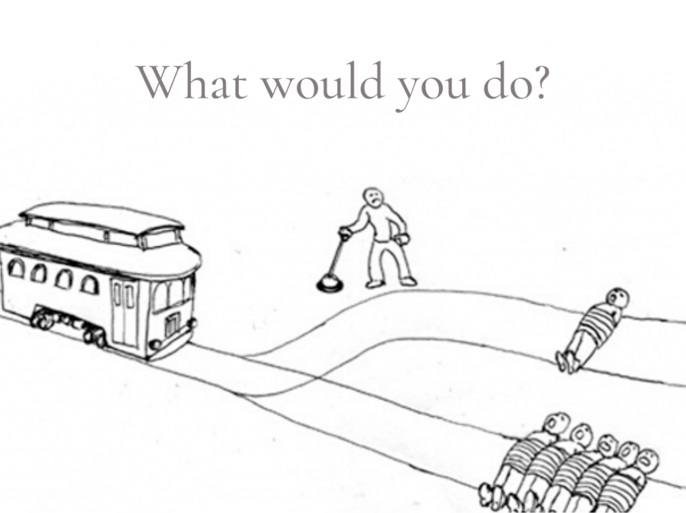

On the obligation of the vaccination pass
26 December 2021
Many countries' legislators imposed on their people to have a vaccination pass to either go to public places such as malls, schools, universities, or to go to work every morning. And perhaps it is a fact now, is it morally just to take such a decision ? Is it simply a means to an end ?
To begin with, we have to make plain the difference between consequential moral reasoning, and categorical.
Consequentialists locate morality in certain duties and rights, for example, every citizen has the right for freedom of speech, even though it might bother some entities and their political and economical status.
Meanwhile, categorical moral reasoning locates morality in the consequences of an act. For example, imprisoning a rebellious leader would prevent manifestations and chaos in a certain country and probably prevent an economic collapse or war.
Another popular example to make distinction between consequential and categorical is the Trolley problem which states :
There is a runaway trolley barreling down the railway tracks. Ahead, on the tracks, there are five people tied up and unable to move. The trolley is headed straight for them. You are standing some distance off in the train yard, next to a lever. If you pull this lever, the trolley will switch to a different set of tracks. However, you notice that there is one person on the side track. You have two (and only two) options:
1-Do nothing, in which case the trolley will kill the five people on the main track.
2-Pull the lever, diverting the trolley onto the side track where it will kill one person.
Taking the side of a consequentialist, is it morally wrong to intentionally pull the lever in the direction of the one person, and this is a second-degree-murder. So doing nothing would be the choice to make.
From the categorical perspective, pulling the lever toward the rail which has one person would actually prevent the death of five persons on the other rail. Therefore, going for the second option is the choice to be made.
Now about the obligation of the vaccination pass, how can we describe it ?
Firstly, let’s make the point that this is not a consequentialist kind of reasoning, since it prevents citizens from their rights to work and go to public places. Diving deep, such a decision arises from authoritarian regimes in which they try to maximize utility by maximizing the overall happiness but fail to respect individuals and minority rights. All we can say about it is that it's a means to an end. But can we really agree on the end of it ?
Obviously, the apparent purpose of obliging people to have a vaccination pass is to save lives by not propagating viruses (Covid in this case). But how legitimate is this claim since there is no real evidence that vaccination would really save lives. Otherwise, from where could governments derive their legitimacy from ?
Well, this is the kind of legitimacy by brute force. When such an entity thinks that the opposition would be minor, It becomes instantly legitimate to take such a decision since not opposing is an act of confirmation, or submission to that decision.
Consequently, that’s how authoritarian regimes make their way through upholding the power and also that’s why civilizations get trapped in the rat race to either shrink toward seeking freedoms and at the same time, maximizing utility for the overall wellbeing.